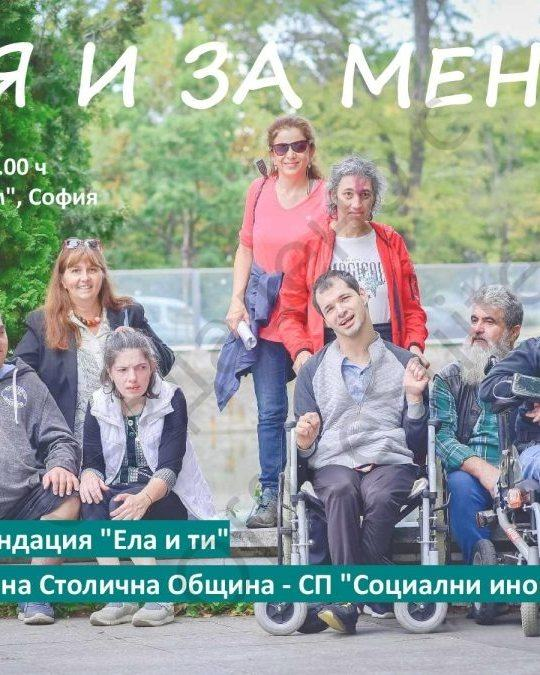

София и за мен
Първата карта на адаптиран маршрут за хора в количка — 34 забележителности в София и маршрут, който всеки избира сам.
Създадохме първата карта на адаптиран маршрут за хора в количка — 34 забележителности и маршрут, по който всеки решава кога и какво да посети.
Маршрутът минава през два от най-големите квартали на София и дава свобода и самостоятелност на хората, които го използват.
Проектът се реализира с подкрепата на Столична програма „Социални иновации“ 2024.
Проектът се реализира с подкрепата на Столична програма „Социални иновации“ 2024 (финансиране).
